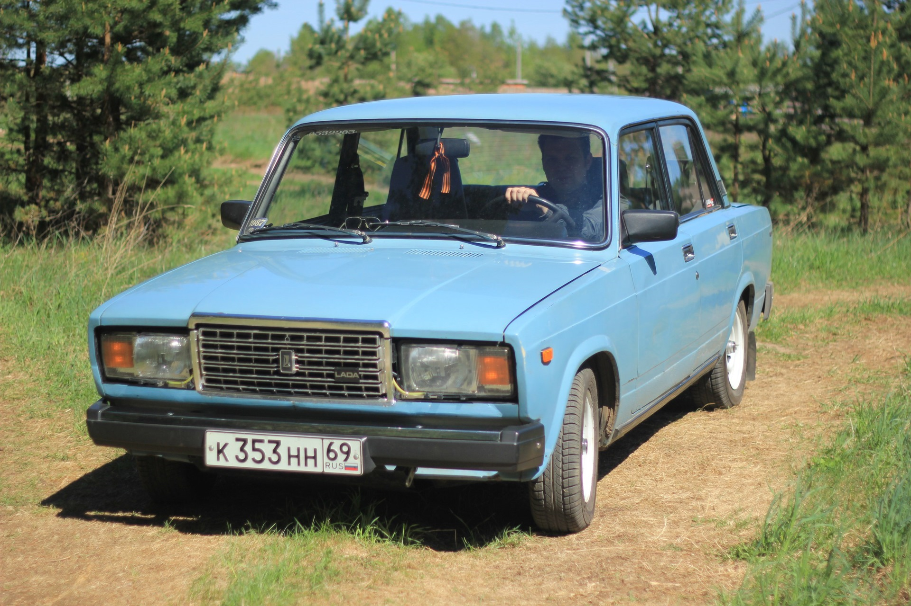
ВАЗ-2107 «Жигули» (LADA 2107) - советский и российский заднеприводный автомобиль II группы малого класса, с кузовом типа седан. На момент своего дебюта в иерархии моделей Волжского автозавода считался преемником ВАЗ-2103. Является одним из последних представителей «вазовской классики», выпускался на ОАО «Волжский автомобильный завод/АвтоВАЗ» с 11 марта 1982 года по 17 апреля 2012 года.
История создания
В начале 1970-х в КБ АвтоВАЗ началась работа по созданию второго поколения заднеприводных легковых автомобилей, призванных заменить выпускаемые модели ВАЗ-2101, ВАЗ-2102, 2103. Так же как и в случае с предыдущими моделями планировалось создание автомобиля с кузовом седан в стандартной комплектации (модель 2105), автомобиля с грузопассажирским кузовом типа «универсал» (2104) и автомобиля с кузовом седан более высокого сегмента (2107). Первые ходовые прототипы ВАЗ-2107 были построены в 1978 году. Серийное производство модели 2107 началось в марте 1982 года. В 2006 году произошел ребрендинг всего классического семейства АвтоВАЗа (за исключением модели 2106, которую в этом же 2006 году снимали с производства). Таким образом ВАЗ 2107 «Жигули» стал называться LADA 2107.
ВАЗ-2107 — модифицированная люкс-версия автомобиля ВАЗ-2105, который, в свою очередь, ведёт своё происхождение от Fiat 124, малолитражного семейного седана образца 1966 года (победителя конкурса Европейский автомобиль года 1967 года). На экспорт ВАЗ-2107 шёл под названиями Lada Nova, Lada Riva, Lada Signet, Lada 1500.
Дизайнер многих автомобилей классического семейства — Владимир Степанов.
С 2002 до 2012 года ВАЗ-21070 (модификация ВАЗ-2107) производился на территории Украины (ЛуАЗ, ЗАЗ и КрАСЗ). В мае 2008 года сборка LADA 2107 налажена на аргунском заводе «Пищемаш» в Чеченской Республике. С марта 2011 года выпуск LADA 2107 освоен Ижевским автозаводом.
В апреле 2012 года концерн АвтоВАЗ под управлением Игоря Комарова принял решение окончательно прекратить производство классического седана LADA 2107 на заводе «ИжАвто». Данное решение принято по причине сильно упавшего спроса на данную модель, а также из-за ускорения работ в Ижевске по подготовке производства к выпуску Lada Granta. Последний седан LADA 2107 сошёл с конвейера завода «ИжАвто» 17 апреля 2012 года. В Египте LADA 2107 собиралась до начала 2014 года. В 2014 году ВАЗ-2107 был снят с производства окончательно.
Производство универсала 2104, унифицированного с седаном по силовой установке, экстерьеру и интерьеру передней части кузова, продолжилось до 17 сентября 2012 года.
В марте 2017 года аналитическое агентство «Автостат» провело исследование, по результатам которого самым популярным легковым автомобилем в России стал седан LADA 2107. В 2012 году ВАЗ-2107 был снят с производства окончательно. Этой моделью на момент исследования управляли 1,75 млн россиян. По данным на середину 2022 года LADA 2107 по-прежнему является самой распространённой моделью на российских дорогах (на учёте состоят 1562 тыс. автомобилей этой марки).
Модификации
- ВАЗ-21070 (двигатель 2103, 1,5 л, 8 кл., карбюратор), бампера передние и задние алюминиевые с резиновой вставкой.
- ВАЗ-21072 (двигатель 2105, 1,3 л, 8 кл., карбюратор, ремённый привод ГРМ).
- ВАЗ-21073 (двигатель 21213, 1,7 л, 8 кл., моновпрыск — экспортная версия для европейского рынка).
- ВАЗ-21074 (двигатель 2106, 1,6 л, 8 кл., карбюратор).
- ВАЗ-2107-20 (двигатель 2104, 1,5 л, 8 кл., распределённый впрыск, Евро-2).
- ВАЗ-2107-71 (двигатель 1,4 л., 66 л. с. двигатель 21034 под бензин А-76, версия для Китая).
- ВАЗ-21074-20 (двигатель 21067-10, 1,6 л, 8 кл., распределённый впрыск, Евро-2).
- ВАЗ-21074-30 (двигатель 21067-20, 1,6 л, 8 кл., распределённый впрыск, Евро-3).
- ВАЗ-210740 (двигатель 21067, 1,6 л, 55кВт/72,7 л. с. 8 кл., инжектор, катализатор) (2007 г.в.).
- ВАЗ-21077 (двигатель 2105, 1,3 л, 8 кл., карбюратор, ремённый привод ГРМ — экспортная версия для Великобритании).
- ВАЗ-21078 (двигатель 2106, 1,6 л, 8 кл., карбюратор — экспортная версия для Великобритании).
- ВАЗ-21079 (роторно-поршневой двигатель 1,3 л, 140 л. с., изначально создана для нужд МВД и КГБ). Годы производства: 1986—1991.
- ВАЗ-2107 ЗНГ (двигатель 21213, 1,7 л, 8 кл., центральный впрыск).
Основные отличия от LADA 2105
- Более мощный двигатель объёмом 1,5 л и мощностью 77 л. с. (для карбюраторных версий в базовой комплектации);
- Более крупная хромированная (на части машин чёрная) решётка радиатора, и как следствие — изменённая под неё крышка капота (в последние годы производства на LADA-2104 в целях унификации ставились такие же);
- Частично изменена структура задних фонарей (отказались от вертикальных стоп-сигналов 2105 и уместили их в верхний ярус, вследствие чего поворотники и огни заднего хода полностью заняли нижний ярус);
- Более комфортабельные передние сиденья с интегрированными подголовниками (в последние годы производства на LADA-2105, 2104 в целях унификации ставились такие же);
- На части выпускаемых машин устанавливалась жестко формованная обшивка потолка салона и пластиковые вентиляционные облицовки задних стоек;
- Модернизированная панель приборов (в частности добавлены тахометр и спидометр с оцифровкой до 180 км/ч, а также указатель давления масла (до 1988 года выпуска, после был заменён эконометром);
- Добавлены дефлекторы холодного воздуха, расположенные по центру передней панели. В то время, как в ноги (через отопитель салона) можно направить поток горячего воздуха, через эти дефлекторы можно в лицо направить струю холодного воздуха (только на скорости, давлением потока встречного воздуха);
- Пластиковые бамперы с хромированными накладками вместо более массивных алюминиевых (в последние годы производства на LADA-2105, 2104 в целях унификации и удешевления ставились такие же). ВАЗ-2107 стал первым отечественным автомобилем с пластмассовыми бамперами советского производства (появившийся годом ранее «Москвич-2140SL» также имел пластиковые бамперы, но они поставлялись из Югославии);
- Частично изменённая форма крышки багажника (без вырезов), с 2008 года начали ставить крышку багажника с вырезами, как у LADA 2105, в связи с унификацией производства (и меньшей трудоёмкостью производства крышки 2105);
- Изменены некоторые детали салона: обивки дверей, кнопки блокировки дверей, панель радиоприемника, ручка рычага КПП, рулевое колесо (4-спицевое вместо 2-спицевого у 2105 и 2104; все три машины поздних годов выпуска (примерно с 1997 года) комплектовались 4-спицевым рулём, но несколько иного дизайна (у оригинального руля 2107 была вогнутая, а не плоская ступица), близкого к рулю ВАЗ-21213);
- Отличается схема электросистемы (отличия и между отдельными модификациями в зависимости от типа двигателя).
- В салоне на крышке бардачка на шильдике написано «LADA» вместо «Жигули» (на 2104 и 2105 последних годов выпуска в целях унификации производства тоже там же писалось «LADA»).
Ранний салон
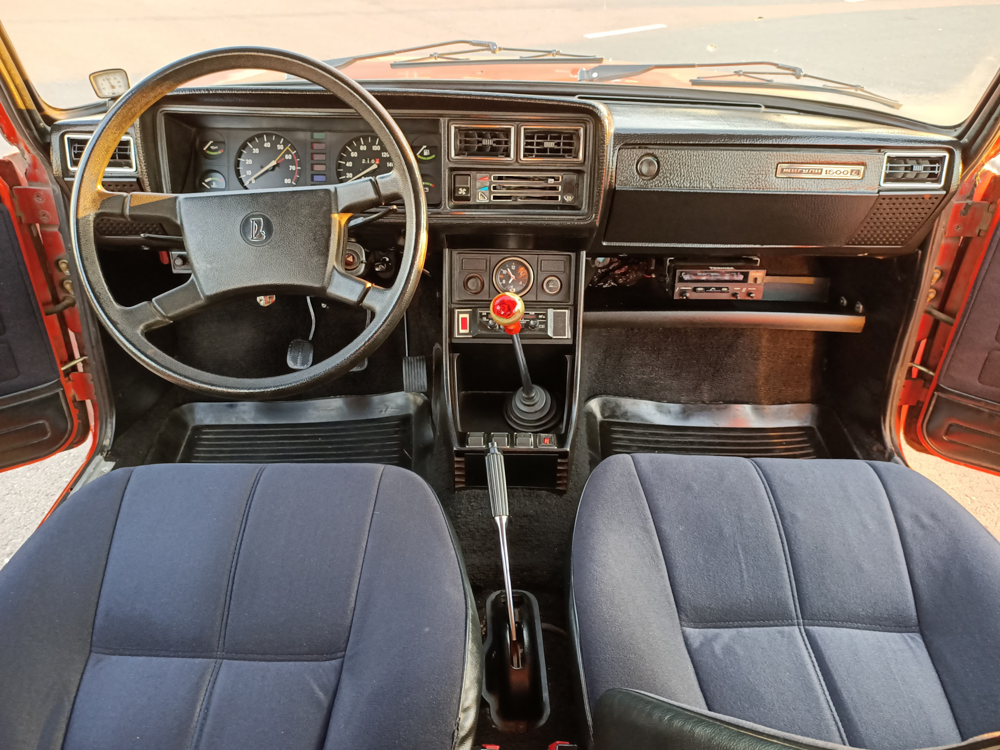
Поздний салон
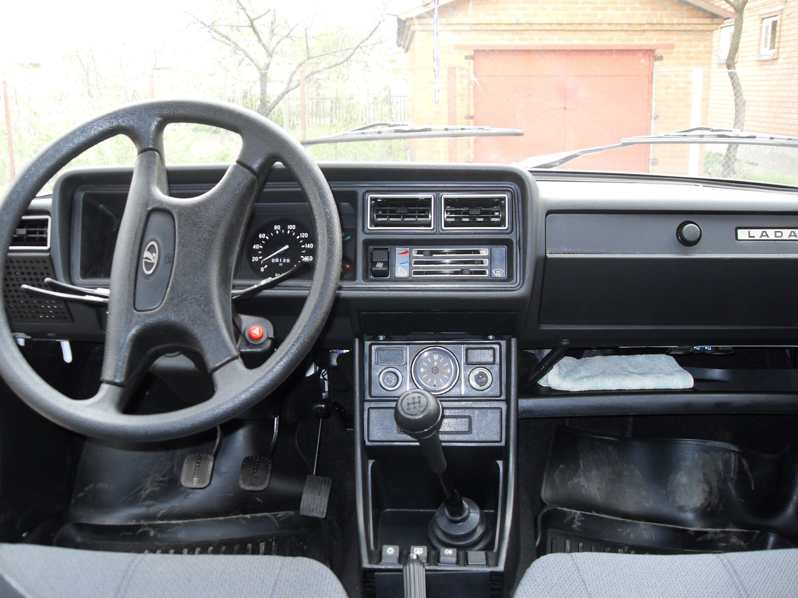
Ранний автомобиль
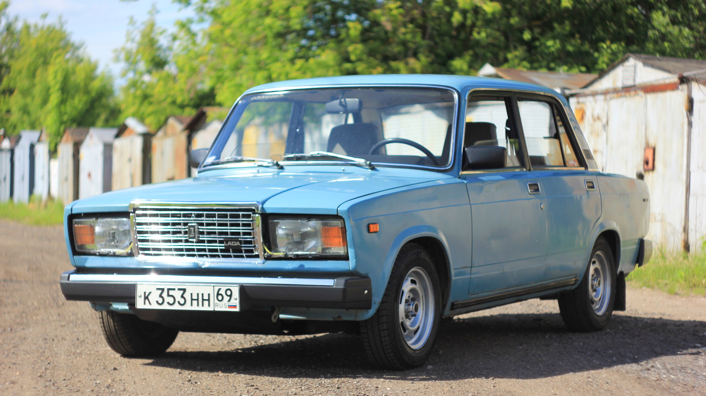
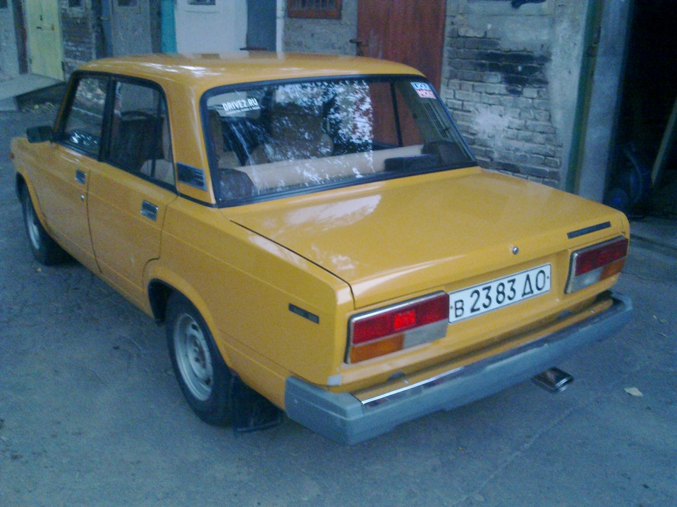
Поздниий автомобиль
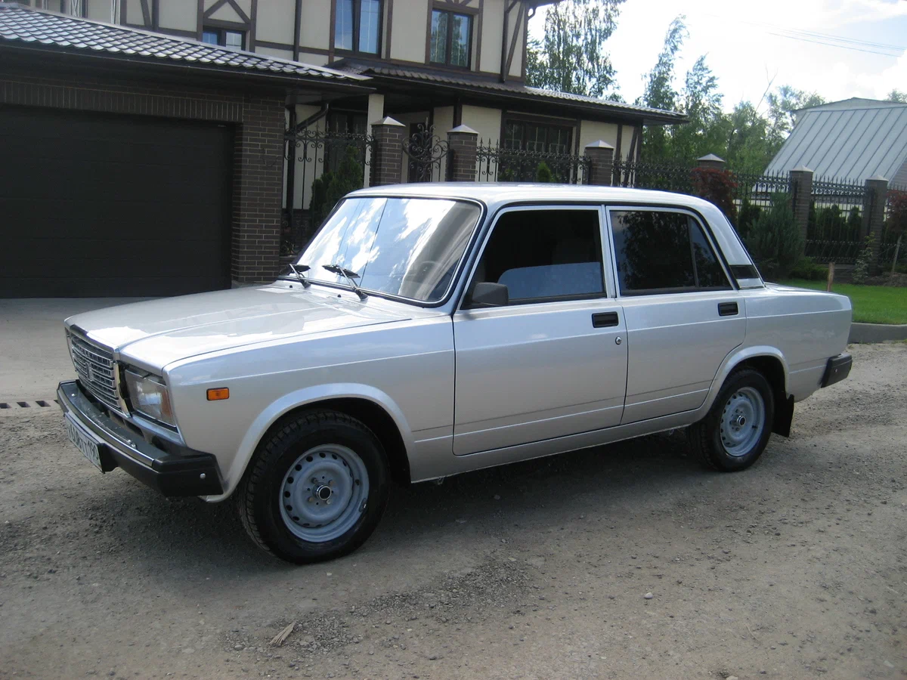
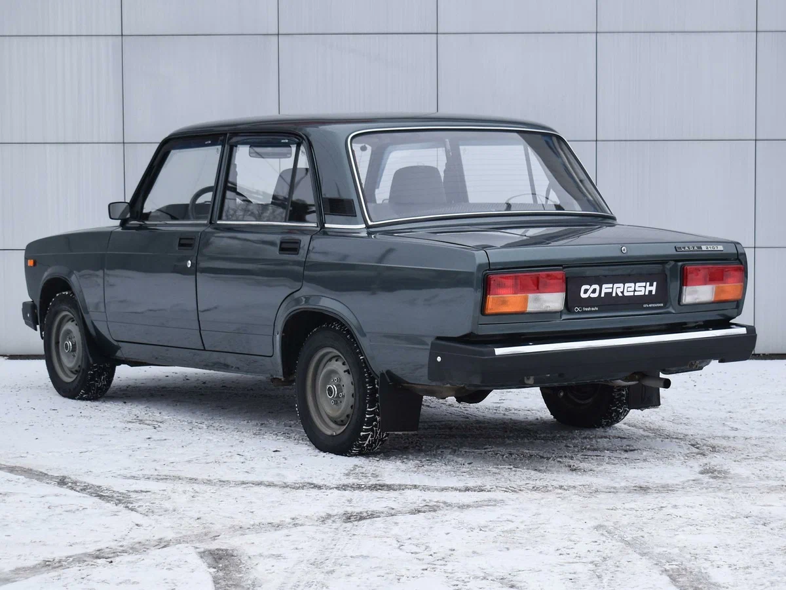
Так же, поскольку автомобилей было выпущено очень много, он был и до сих пор остается одним из самых тюнингуемых автомобилей. Вот классический пример молодёжного тюнинга: белые поворотники в круг, занижение подвески с тюнинговаными рычагами
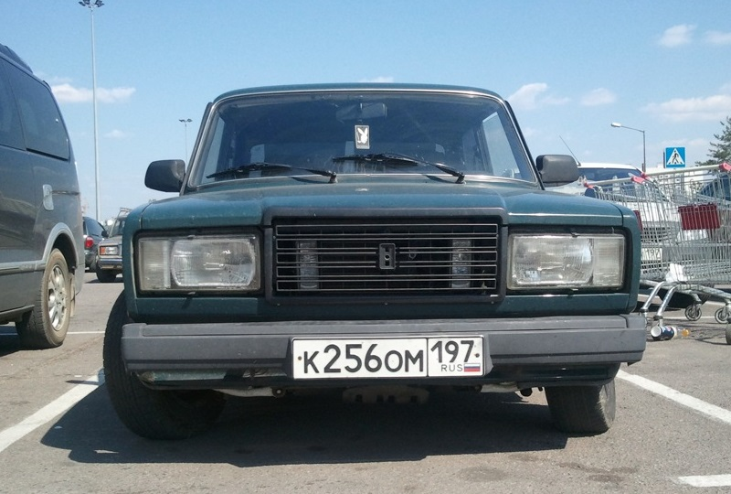
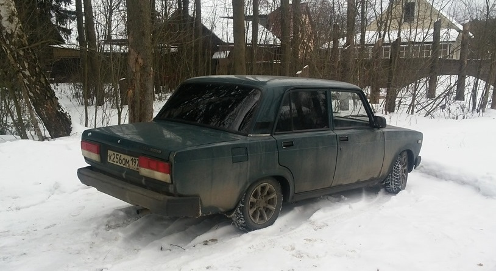
А вот и тюнингованный салон: спортивный руль, бортовой компьютер Gamma, мощное музыкальное головное устройство Kenwood, колонки в дверях Pioneer, кастомный переключатель нештатных стеклоподъемников, щиток приборов от ВАЗ-2110
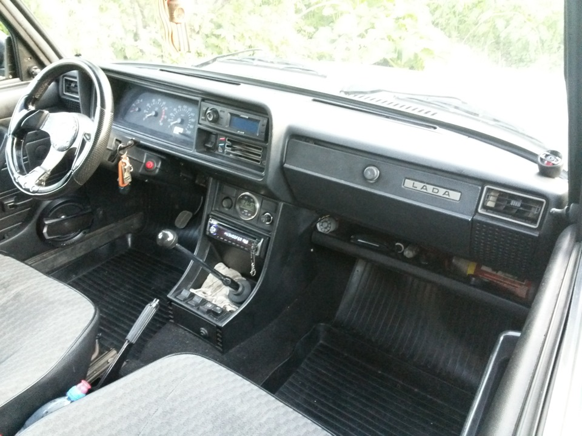
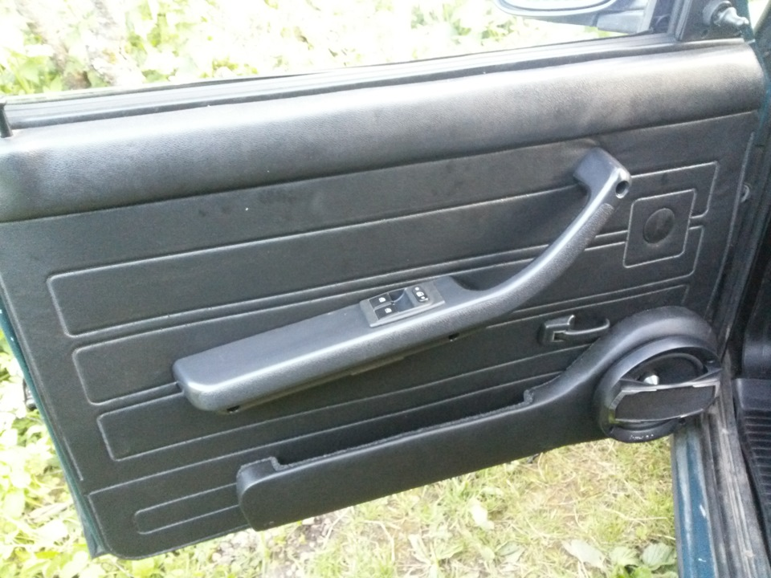